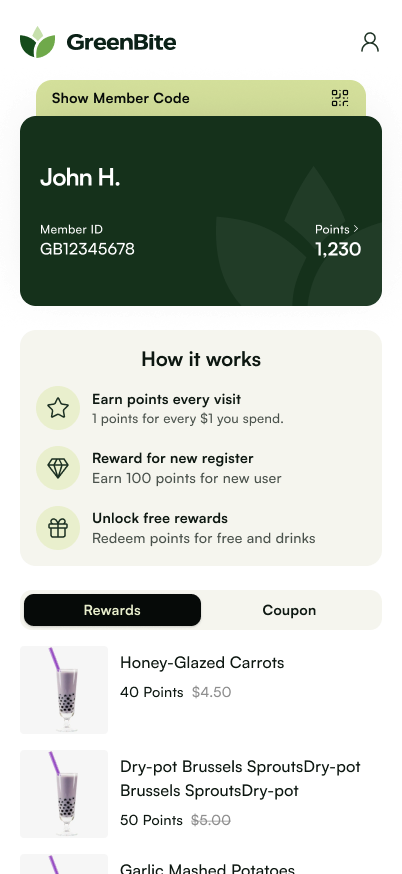
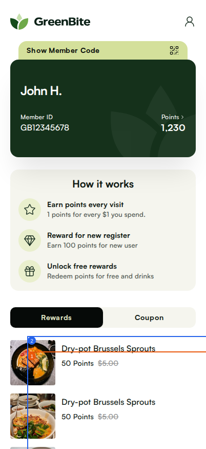

状态：success
| 设计稿 | 实现（已标注） |
|---|---|
 |  |
| 编号 | 严重程度 | 位置/组件 | 说明 |
|---|---|---|---|
| 1 | P1 | Rewards and Coupon tab bar | The width ratio of Rewards tab to Coupon tab is inconsistent; Rewards tab should be proportionally wider than Coupon tab as per design. |
| 2 | P2 | Vertical spacing between How it works section and Rewards tab | Vertical spacing is smaller than design; insufficient space between the How it works section and Rewards tab bar. |